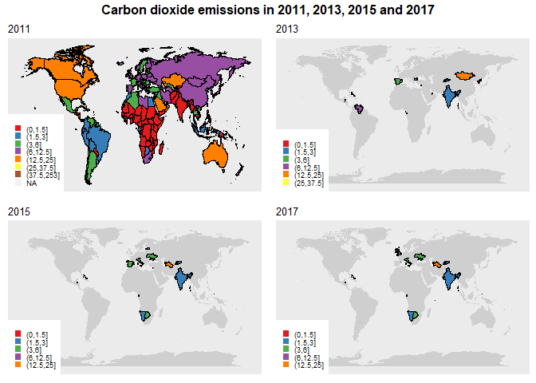
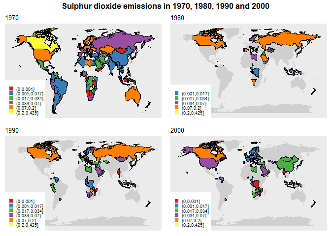
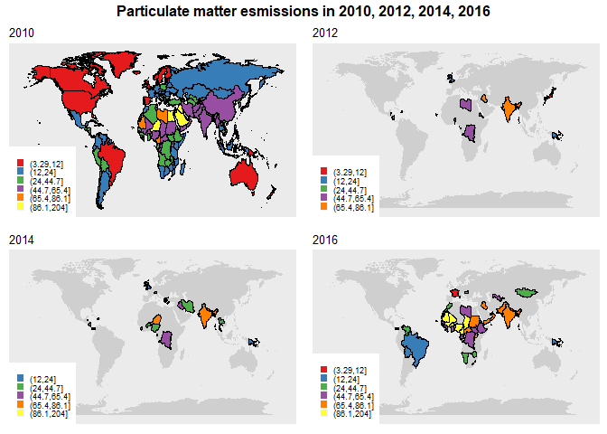
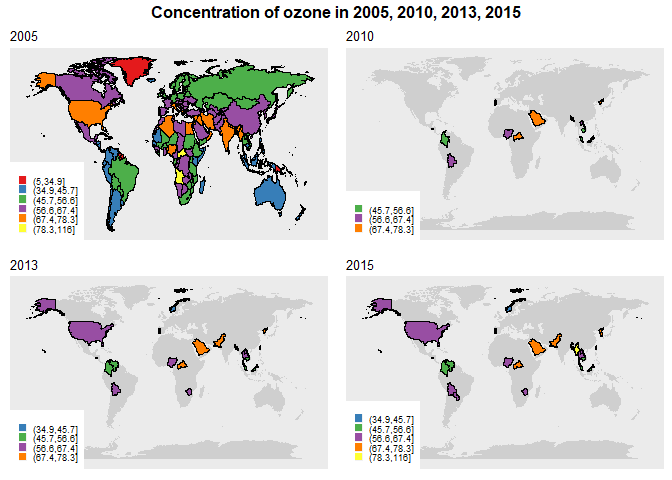

Introduction
Even without visible smog, air pollution is all around us, and thus it is hard to eliminate the health effects of the toxic contaminators on health. The harmful effect of air pollutants is widely investigated in different researches conducted in many regions of the world. Air pollutants can be the cause of death from stroke, lung cancer, and another heart disease. Air pollution has a pernicious effect on children and it trigger childhood cancer. All over the world, up to 14% of 5 – 18 years-old children have asthma relating to factors including air pollution (see World Health Organisation for details). Besides, air pollution drives climate change (the main driver of climate change is fossil fuel combustion), which itself can be the problem for well-being.
An assessment by WHO concluded that, in 2016, 91% of the world population was living in places where the WHO air quality guidelines levels were not met. In order to protect public health, WHO created air quality standards, which suggest limits for four main air pollutants. According to WHO Air quality guidelines estimates, air pollution is the cause of 3 million deaths per year. The evaluation of WHO shows, that the death caused by air pollution can be decreased by around 15% as a result of reduction in particulate matter (PM10) pollution from 70 to 20 micrograms per cubic meter.
Many countries fail to monitor pollutant concentrations in the air. However, now a combination of satellite data, air transport models and local meteorological conditions can provide a good evaluation of air quality. Outdoor air pollution can be defined as the emission of harmful substances into the atmosphere. This broad definition, encapsulates a number of pollutants, including:
- sulphur dioxide ($SO_2$),
- nitrogen oxides ($NO_x$),
- ozone ($O_3$),
- particulate matter,
- carbon monoxide ($CO$)
- carbon dioxide ($CO_2$)
- and volatile organic compounds ($VOC_s$).
Data description
We took the historical data of emissions of the following four types of pollutants: carbon dioxide, sulphur dioxide per person, particulate matter measuring less than 2.5µm (micrometers) in diameter, ozone based on territorial emissions derived by Our World in Data.
# load the required libraries used in the article
if (!require("pacman")) install.packages("pacman")
pacman::p_load(ggplot2, dplyr, kableExtra, tidyverse,
magrittr, ggmap, ggpubr, stringr, RColorBrewer, reshape2)
The variables Entity and Code show the country and/ or area and its
code, where the level of a particular pollutant was measured.
Carbon dioxide (CO2)
co <- read.csv("co.csv")
range(unique(co$Year))
[1] 1800 2017
The number of observations in the initial data is 16739 and the covered time span is 1800-2017. Data contains 194 countries.
The variable Co2 shows the tonnes of measured carbon dioxide data has
been converted from tonnes of carbon to tonnes of carbon dioxide
($CO_2$) using a conversion factor of 3.664). Carbon Dioxide commonly
enters the body through breathing indoor and outdoor air, vehicle
exhaust, and fumes from heating or cooking and via skin contact -
touching dry ice. Carbon dioxide can cause suffocation, incapacitation
and unconsciousness, vertigo and double vision, headaches, inability to
concentrate, tinnitus and seizures. The long-term exposure of $CO_2$ can
cause changes in bone calcium and body metabolism. When levels of CO2
rise and there is less fresh air, it can
cause
restlessness, drowsiness and more. High levels are directly correlated
to low productivity, high sick leave and infectious disease
transmission.
The acceptable level of $CO_2$ in the air is 400ppm (ppm is parts per million). The level of 2000ppm can cause symptoms like sweating, increased heart rate and difficulty during breathing will occur.
The summary of carbon dioxide emissions is represented below:
summary(co$Co2)
## Min. 1st Qu. Median Mean 3rd Qu. Max.
## 0.000 0.201 1.071 3.555 4.503 252.645
## Sulphur dioxide (SO2)
so <- read.csv("so.csv")
The number of observations in the initial data is 2079 and the covered time span is 1850-2000 (represented by decades). Data contains 130 countries.
range(unique(so$Year))
## [1] 1850 2000
The variable So2 shows the tonnes of measured emissions per capita
(1850-2000). One of the main causes of $SO_2$ emissions is the use of
coal as a source of energy. $SO_2$ emissions sharply rise after
industrialisation: the increase in emission is as a result of
large-scale burning of sulphur-containing fuels and industrial
processing.
Sulfure dioxide can be the cause of health problems like asthma, bronchial symptoms, lung inflammation, reduced lung function and causes irritation of the eyes. Sulfuric acid (combination of $SO2$ and water) is the main component of acid rain which is the cause of deforestation. The guideline values for sulfure dioxide is 20 $\frac{mg}{m^3}$ 24-hour mean.
The summary of sulphur dioxide emissions is represented below:
summary(so$So2)
## Min. 1st Qu. Median Mean 3rd Qu. Max.
## 0.0000167 0.0002001 0.0015000 0.0178443 0.0162977 0.4250609
## Particulate matter (PM)
pm <- read.csv("pm.csv")
The number of observations in the initial data is 2090 and the covered time span is 1990-2016 (the frequency of the data is not regular). Data contains 189 countries.
range(unique(pm$Year))
## [1] 1990 2016
The variable PM shows the average level of exposure of a nation’s
population to concentrations of suspended particles measuring less than
2.5 microns in aerodynamic diameter. The calculations had been done by
using weighting mean annual concentrations of PM2.5 by population.
Actually, one of the most harmful air pollutant is a particulate matter,
which is capable of penetrating deep into the respiratory tract and
increases the risk of heart, respiratory diseases and lung cancer. This
pollutant can originate from natural or man-made sources, mainly from
fuel combustion and road traffic. According to the WHO Air Quality
Guideline the limits for PM is 10 $\frac{mg}{m^3}$ annual mean.
The summary of this variable is represented below:
summary(pm$PM)
## Min. 1st Qu. Median Mean 3rd Qu. Max.
## 3.291 15.199 21.950 30.160 37.624 203.744
## Ozone (O3)
oz <- read.csv("oz.csv")
The number of observations in the initial data is 1316 and the covered time span is 1990-2015 (the frequency of the data is not regular). Data contains 188 countries.
range(unique(oz$Year))
## [1] 1990 2015
The variable OZ shows population-weighted ozone ($O_3$) concentration
by country (1990-2015) in parts per billion (ppb). As source states,
data is gathered based on a combination of air quality observations from
satellites combined with information from global chemical transport
models, and available ground measurements. A global chemical transport
model was used to calculate a seasonal (summer, when temperatures are
highest) average concentration. Taking into account the population in
each block within a country, this data is then aggregated as estimated
exposure concentrations to national-level population-weighted averages
for a given year.
Ozone is can be the cause of asthma or the cause of making it worse. Ozone is mainly caused by the reaction of sunlight with pollutants from vehicle emissions. Ozone is major constituents of photochemical smog. The highest levels of ozone pollution occur during periods of sunny weather. According to the WHO Air Quality Guideline the limits for ozone is 100 $\frac{mg}{m^3}$ 8-hour mean.
The summary of the level of ozone concentration is represented below:
summary(oz$OZ)
## Min. 1st Qu. Median Mean 3rd Qu. Max.
## 5.00 45.00 54.00 54.55 63.00 116.00
Categorization/Grouping
In order to see the changes in air pollution worldwide, let us
categorize pollutants, by using unequal-size groups. As in the equal
categorization groups with extreme values contain only a few
observations, the extremal values are included in the same group (the
last or the first). See the code below for grouping four above-mentioned
pollutant types; the new variable group for each data will be created.
Creating groups
co$group <- cut(co$Co2, breaks = c(0, 1.5, 3, 6, 12.5, 25, 37.5, max(co$Co2)))
so$group <- cut(so$So2, breaks = c(0, 0.001, 0.017, 0.034, 0.07, 0.2, max(so$So2)))
pm$group <- cut(pm$PM, breaks = c(min(pm$PM), 12, 24, 44.7, 65.4, 86.1, max(pm$PM)))
oz$group <- cut(oz$OZ, breaks = c(min(oz$OZ), 34.9, 45.7, 56.6, 67.4, 78.3, max(oz$OZ)))
gr <- data.frame(table(co$group), rbind(data.frame(table(so$group)), c(NA, NA)),
rbind(data.frame(table(pm$group)), c(NA, NA)),
rbind(data.frame(table(oz$group)), c(NA, NA)))
colnames(gr) <- c("CO2", "Freq CO2", "SO2", "Freq SO2", "PM", "Freq PM", "OZ", "Freq OZ")
options(knitr.kable.NA = "")
knitr::kable(gr, digits = 2) %>%
kable_styling(bootstrap_options = "striped", full_width = F)
| CO2 | Freq CO2 | SO2 | Freq SO2 | PM | Freq PM | OZ | Freq OZ |
|---|---|---|---|---|---|---|---|
| (0,1.5] | 8936 | (0,0.001] | 970 | (3.29,12] | 330 | (5,34.9] | 67 |
| (1.5,3] | 1970 | (0.001,0.017] | 598 | (12,24] | 803 | (34.9,45.7] | 276 |
| (3,6] | 2106 | (0.017,0.034] | 186 | (24,44.7] | 527 | (45.7,56.6] | 377 |
| (6,12.5] | 2365 | (0.034,0.07] | 176 | (44.7,65.4] | 265 | (56.6,67.4] | 391 |
| (12.5,25] | 698 | (0.07,0.2] | 128 | (65.4,86.1] | 93 | (67.4,78.3] | 161 |
| (25,37.5] | 146 | (0.2,0.425] | 21 | (86.1,204] | 71 | (78.3,116] | 41 |
| (37.5,253] | 94 |
Maps
When the groups are created, the results can be shown using the world
map. We are going to use the function map_data() which contains the
data to create a world map.
map.world <- map_data("world")
Co2
In order to use the information from the built-in data (especially data about the longitude and latitude of locations to plot countries as polygons) the names of countries must be exactly the same, thus the names in our data should be changed. As there were dissimilarities between country names in the data world and our data, the changes had been inspected. The code below shows the difference between country names in both data. As data is cleaned, there is no difference between the countries names. The detection of dissimilarities for further 3 data will be done in the same way.
# Detect dissimilarities
unique(na.omit(co$Entity))[c(which(!unique(na.omit(co$Entity)) %in% unique(na.omit(map.world$region))))]
## factor(0)
## 193 Levels: Afghanistan Albania Algeria Andorra Angola ... Zimbabwe
Then, these two separate datasets should be joined together.
map.world_joined <- left_join(co, map.world, by = c('Entity'='region'))
Now, we are going to plot the changes in the data. The reference year for Co2 is chosen as 2011. In the remaining three plots only the countries with changes are shown (with respect to the base year).
themeplot <- theme(text = element_text(family = "Gill Sans", size = 8),
legend.key.size = unit(0.5, "lines"), panel.grid = element_blank(),
plot.title = element_text(size = 30), plot.subtitle = element_text(size = 10),
axis.text = element_blank(), axis.title = element_blank(),
axis.ticks = element_blank(), legend.position = c(0, 0), legend.justification = c(0,
0), legend.title = element_blank())
finalplot <- function(base = 2011, current = 2014, var = Co2, data = map.world_joined,
initialdata = co) {
var = enquo(var)
if (base == current) {
data %>% filter(!is.na(!!var)) %>% filter(Year == base) %>%
ggplot() + geom_polygon(aes(x = long, y = lat, group = group.y, fill = group.x)) +
scale_fill_brewer(palette = "Set1") + themeplot +
labs(subtitle = paste(base)) + geom_path(color = "black",
aes(x = long, y = lat, group = group.y))
} else {
save <- initialdata %>% filter(Year == base | Year == current) %>%
filter(Entity == lag(Entity), group != lag(group)) %>%
left_join(., map.world, by = c(Entity = "region"))
save %>% ggplot() + geom_polygon(data = map.world, aes(x = long, y = lat,
group = group), fill = "gray81") +
geom_polygon(aes(x = long, y = lat,
group = group.y, fill = group.x)) +
scale_fill_manual(values = brewer.pal(n = 7,
name = "Set1")[as.numeric(sort(unique(save %>%
select(group.x) %>% pull())))]) +
themeplot + labs(subtitle = paste(current)) +
geom_path(color = "black",
aes(x = long, y = lat, group = group.y))
}
}
To see the changes in two directions (increase or decrease), we need to create functions that extract from the initial data the name of the country which experienced increase or decrease, the year of change and the group:
returndataup <- function(data, base, current) {
data %>% filter(Year == base | Year == current) %>%
filter(Entity == lag(Entity), as.numeric(group) > as.numeric(lag(group))) %>%
left_join(., map.world, by = c(Entity = "region")) %>%
distinct(Entity, .keep_all = TRUE) %>% select(Entity, Year, group.x)
}
returndatadown <- function(data, base, current) {
data %>% filter(Year == base | Year == current) %>%
filter(Entity == lag(Entity), as.numeric(group) < as.numeric(lag(group))) %>%
left_join(., map.world, by = c(Entity = "region")) %>%
distinct(Entity, .keep_all = TRUE) %>% select(Entity, Year, group.x)
}
And, finally, using the function above the changes can be detected on the created map:
annotate_figure(ggarrange(finalplot(2011, 2011), finalplot(2011, 2013),
finalplot(2011, 2015), finalplot(2011, 2017), ncol = 2, nrow = 2, common.legend = F),
top = text_grob("Carbon dioxide emissions in 2011, 2013, 2015 and 2017",
face = "bold", size = 12))

Countries that experienced an increase in the level of carbon dioxide emissions:
coup <- rbind(co%>%select(Entity, Year, group)%>%filter(Year == 2011)%>%
rename(group.x = group), returndataup(co, 2011, 2013),
returndataup(co, 2011, 2015),
returndataup(co, 2011, 2017))%>%
arrange(Entity)%>% rename(Group = group.x)
options(knitr.kable.NA = '')
knitr::kable(dcast(coup%>%filter(Entity %in%
names(which(table(coup$Entity) > 1))), Entity~Year))%>%
kable_styling(bootstrap_options = "striped", full_width = F)
| Entity | 2011 | 2013 | 2015 | 2017 |
|---|---|---|---|---|
| Andorra | (3,6] | (6,12.5] | (6,12.5] | |
| Bahamas | (3,6] | (6,12.5] | (6,12.5] | (6,12.5] |
| Botswana | (1.5,3] | (3,6] | (3,6] | |
| India | (0,1.5] | (1.5,3] | (1.5,3] | (1.5,3] |
| Kyrgyzstan | (0,1.5] | (1.5,3] | (1.5,3] | (1.5,3] |
| Maldives | (1.5,3] | (3,6] | (3,6] | |
| Mongolia | (6,12.5] | (12.5,25] | ||
| Namibia | (0,1.5] | (1.5,3] | (1.5,3] | |
| Palau | (6,12.5] | (12.5,25] | (12.5,25] | |
| Seychelles | (3,6] | (6,12.5] | ||
| Turkmenistan | (6,12.5] | (12.5,25] | (12.5,25] | |
| Venezuela | (3,6] | (6,12.5] |
Countries that experienced a decrease in the level of carbon dioxide emissions:
codown <- rbind(co%>%select(Entity, Year, group)%>%filter(Year == 2011)%>%
rename(group.x = group), returndatadown(co, 2011, 2013),
returndatadown(co, 2011, 2015),
returndatadown(co, 2011, 2017))%>%
arrange(Entity)%>% rename(Group = group.x)
options(knitr.kable.NA = '')
knitr::kable(dcast(codown%>%filter(Entity %in%
names(which(table(codown$Entity) > 1))), Entity~Year))%>%
kable_styling(bootstrap_options = "striped", full_width = F)
| Entity | 2011 | 2013 | 2015 | 2017 |
|---|---|---|---|---|
| Belize | (1.5,3] | (0,1.5] | (0,1.5] | (0,1.5] |
| Bulgaria | (6,12.5] | (3,6] | ||
| Cyprus | (6,12.5] | (3,6] | (3,6] | |
| Equatorial Guinea | (6,12.5] | (3,6] | (3,6] | (3,6] |
| Estonia | (12.5,25] | (6,12.5] | ||
| Italy | (6,12.5] | (3,6] | (3,6] | |
| Malta | (6,12.5] | (3,6] | (3,6] | (3,6] |
| North Korea | (1.5,3] | (0,1.5] | ||
| Qatar | (37.5,253] | (25,37.5] | ||
| Spain | (6,12.5] | (3,6] | (3,6] | |
| UK | (6,12.5] | (3,6] | ||
| Ukraine | (6,12.5] | (3,6] | (3,6] |
SO2
To see the changes onthe map the data for sulphur dioxide is created:
map.world_joined2 <- left_join(so, map.world, by = c('Entity'='region' ))
annotate_figure(ggarrange(finalplot(1970, 1970, So2, map.world_joined2, so),
finalplot(1970, 1980, So2, map.world_joined2, so),
finalplot(1970, 1990, So2, map.world_joined2, so),
finalplot(1970, 2000, So2, map.world_joined2, so),
ncol = 2, nrow = 2, common.legend = F),
top = text_grob("Sulphur dioxide emissions in 1970, 1980, 1990 and 2000",
face = "bold", size = 12))

Countries that experienced an increase in the level of sulfur dioxide emissions:
soup <- rbind(so %>% select(Entity, Year, group) %>% filter(Year == 1970) %>%
rename(group.x = group),
returndataup(so, 1970, 1980),
returndataup(so, 1970, 1990),
returndataup(so, 1970, 2000)) %>%
arrange(Entity) %>% rename(Group = group.x)
options(knitr.kable.NA = "")
knitr::kable(dcast(soup %>% filter(Entity %in%
names(which(table(soup$Entity) > 1))), Entity ~ Year)) %>%
kable_styling(bootstrap_options = "striped", full_width = F)
| Entity | 1970 | 1980 | 1990 | 2000 |
|---|---|---|---|---|
| Azerbaijan | (0.017,0.034] | (0.034,0.07] | ||
| Bahrain | (0.001,0.017] | (0.017,0.034] | (0.017,0.034] | (0.07,0.2] |
| Benin | (0,0.001] | (0.001,0.017] | ||
| Bosnia and Herzegovina | (0.034,0.07] | (0.07,0.2] | ||
| Botswana | (0,0.001] | (0.001,0.017] | (0.034,0.07] | |
| Brunei | (0.07,0.2] | (0.2,0.425] | (0.2,0.425] | (0.2,0.425] |
| Bulgaria | (0.07,0.2] | (0.2,0.425] | (0.2,0.425] | |
| Cameroon | (0,0.001] | (0.001,0.017] | (0.001,0.017] | (0.001,0.017] |
| China | (0.001,0.017] | (0.017,0.034] | ||
| Croatia | (0.017,0.034] | (0.034,0.07] | (0.034,0.07] | |
| Eritrea | (0,0.001] | (0.001,0.017] | ||
| Estonia | (0.07,0.2] | (0.2,0.425] | ||
| Gabon | (0.017,0.034] | (0.034,0.07] | (0.034,0.07] | (0.034,0.07] |
| Greece | (0.017,0.034] | (0.034,0.07] | (0.034,0.07] | (0.034,0.07] |
| Haiti | (0,0.001] | (0.001,0.017] | ||
| Iceland | (0.034,0.07] | (0.07,0.2] | (0.07,0.2] | |
| Indonesia | (0,0.001] | (0.001,0.017] | (0.001,0.017] | (0.001,0.017] |
| Iraq | (0.001,0.017] | (0.017,0.034] | (0.017,0.034] | (0.017,0.034] |
| Israel | (0.034,0.07] | (0.07,0.2] | ||
| Jamaica | (0.017,0.034] | (0.034,0.07] | (0.034,0.07] | (0.034,0.07] |
| Jordan | (0.001,0.017] | (0.017,0.034] | (0.017,0.034] | |
| Lebanon | (0.001,0.017] | (0.017,0.034] | ||
| Lithuania | (0.034,0.07] | (0.07,0.2] | ||
| Macedonia | (0.034,0.07] | (0.07,0.2] | (0.07,0.2] | |
| Malta | (0.034,0.07] | (0.07,0.2] | (0.07,0.2] | |
| Moldova | (0.034,0.07] | (0.07,0.2] | ||
| Mongolia | (0,0.001] | (0.034,0.07] | (0.017,0.034] | |
| Namibia | (0,0.001] | (0.07,0.2] | (0.034,0.07] | (0.017,0.034] |
| Nepal | (0,0.001] | (0.001,0.017] | ||
| North Korea | (0.001,0.017] | (0.017,0.034] | (0.017,0.034] | |
| Oman | (0.001,0.017] | (0.034,0.07] | (0.034,0.07] | |
| Panama | (0,0.001] | (0.001,0.017] | (0.001,0.017] | (0.001,0.017] |
| Portugal | (0.001,0.017] | (0.017,0.034] | (0.017,0.034] | (0.017,0.034] |
| Republic of Congo | (0.001,0.017] | (0.034,0.07] | ||
| Russia | (0.034,0.07] | (0.07,0.2] | (0.07,0.2] | |
| Saudi Arabia | (0.017,0.034] | (0.07,0.2] | (0.034,0.07] | (0.034,0.07] |
| Singapore | (0.017,0.034] | (0.034,0.07] | (0.07,0.2] | (0.07,0.2] |
| South Korea | (0.017,0.034] | (0.034,0.07] | ||
| Spain | (0.034,0.07] | (0.07,0.2] | ||
| Syria | (0.001,0.017] | (0.017,0.034] | (0.017,0.034] | |
| Trinidad | (0.001,0.017] | (0.017,0.034] | ||
| Tunisia | (0.001,0.017] | (0.017,0.034] | (0.017,0.034] | (0.017,0.034] |
| Turkey | (0.001,0.017] | (0.017,0.034] | (0.017,0.034] | |
| Turkmenistan | (0.017,0.034] | (0.034,0.07] | ||
| United Arab Emirates | (0.034,0.07] | (0.07,0.2] | (0.07,0.2] | |
| Yemen | (0,0.001] | (0.001,0.017] | (0.001,0.017] | (0.017,0.034] |
Countries that experienced a decrease in the level of sulfur dioxide emissions:
soup <- rbind(so %>% select(Entity, Year, group) %>% filter(Year == 1970) %>%
rename(group.x = group),
returndataup(so, 1970, 1980),
returndataup(so, 1970, 1990),
returndataup(so, 1970, 2000)) %>%
arrange(Entity) %>% rename(Group = group.x)
options(knitr.kable.NA = "")
knitr::kable(dcast(soup %>% filter(Entity %in%
names(which(table(soup$Entity) > 1))), Entity ~ Year)) %>%
kable_styling(bootstrap_options = "striped", full_width = F)
| Entity | 1970 | 1980 | 1990 | 2000 |
|---|---|---|---|---|
| Azerbaijan | (0.017,0.034] | (0.034,0.07] | ||
| Bahrain | (0.001,0.017] | (0.017,0.034] | (0.017,0.034] | (0.07,0.2] |
| Benin | (0,0.001] | (0.001,0.017] | ||
| Bosnia and Herzegovina | (0.034,0.07] | (0.07,0.2] | ||
| Botswana | (0,0.001] | (0.001,0.017] | (0.034,0.07] | |
| Brunei | (0.07,0.2] | (0.2,0.425] | (0.2,0.425] | (0.2,0.425] |
| Bulgaria | (0.07,0.2] | (0.2,0.425] | (0.2,0.425] | |
| Cameroon | (0,0.001] | (0.001,0.017] | (0.001,0.017] | (0.001,0.017] |
| China | (0.001,0.017] | (0.017,0.034] | ||
| Croatia | (0.017,0.034] | (0.034,0.07] | (0.034,0.07] | |
| Eritrea | (0,0.001] | (0.001,0.017] | ||
| Estonia | (0.07,0.2] | (0.2,0.425] | ||
| Gabon | (0.017,0.034] | (0.034,0.07] | (0.034,0.07] | (0.034,0.07] |
| Greece | (0.017,0.034] | (0.034,0.07] | (0.034,0.07] | (0.034,0.07] |
| Haiti | (0,0.001] | (0.001,0.017] | ||
| Iceland | (0.034,0.07] | (0.07,0.2] | (0.07,0.2] | |
| Indonesia | (0,0.001] | (0.001,0.017] | (0.001,0.017] | (0.001,0.017] |
| Iraq | (0.001,0.017] | (0.017,0.034] | (0.017,0.034] | (0.017,0.034] |
| Israel | (0.034,0.07] | (0.07,0.2] | ||
| Jamaica | (0.017,0.034] | (0.034,0.07] | (0.034,0.07] | (0.034,0.07] |
| Jordan | (0.001,0.017] | (0.017,0.034] | (0.017,0.034] | |
| Lebanon | (0.001,0.017] | (0.017,0.034] | ||
| Lithuania | (0.034,0.07] | (0.07,0.2] | ||
| Macedonia | (0.034,0.07] | (0.07,0.2] | (0.07,0.2] | |
| Malta | (0.034,0.07] | (0.07,0.2] | (0.07,0.2] | |
| Moldova | (0.034,0.07] | (0.07,0.2] | ||
| Mongolia | (0,0.001] | (0.034,0.07] | (0.017,0.034] | |
| Namibia | (0,0.001] | (0.07,0.2] | (0.034,0.07] | (0.017,0.034] |
| Nepal | (0,0.001] | (0.001,0.017] | ||
| North Korea | (0.001,0.017] | (0.017,0.034] | (0.017,0.034] | |
| Oman | (0.001,0.017] | (0.034,0.07] | (0.034,0.07] | |
| Panama | (0,0.001] | (0.001,0.017] | (0.001,0.017] | (0.001,0.017] |
| Portugal | (0.001,0.017] | (0.017,0.034] | (0.017,0.034] | (0.017,0.034] |
| Republic of Congo | (0.001,0.017] | (0.034,0.07] | ||
| Russia | (0.034,0.07] | (0.07,0.2] | (0.07,0.2] | |
| Saudi Arabia | (0.017,0.034] | (0.07,0.2] | (0.034,0.07] | (0.034,0.07] |
| Singapore | (0.017,0.034] | (0.034,0.07] | (0.07,0.2] | (0.07,0.2] |
| South Korea | (0.017,0.034] | (0.034,0.07] | ||
| Spain | (0.034,0.07] | (0.07,0.2] | ||
| Syria | (0.001,0.017] | (0.017,0.034] | (0.017,0.034] | |
| Trinidad | (0.001,0.017] | (0.017,0.034] | ||
| Tunisia | (0.001,0.017] | (0.017,0.034] | (0.017,0.034] | (0.017,0.034] |
| Turkey | (0.001,0.017] | (0.017,0.034] | (0.017,0.034] | |
| Turkmenistan | (0.017,0.034] | (0.034,0.07] | ||
| United Arab Emirates | (0.034,0.07] | (0.07,0.2] | (0.07,0.2] | |
| Yemen | (0,0.001] | (0.001,0.017] | (0.001,0.017] | (0.017,0.034] |
PM
To see the changes on the map the data for particulate matter is created:
map.world_joined3 <- left_join(pm, map.world, by = c('Entity'='region'))
annotate_figure(ggarrange(finalplot(2010,2010, PM, map.world_joined3, pm),
finalplot(2010,2012, PM, map.world_joined3, pm),
finalplot(2010,2014, PM, map.world_joined3, pm),
finalplot(2010,2016, PM, map.world_joined3, pm),
ncol = 2, nrow = 2, common.legend = F),
top = text_grob("Particulate matter esmissions in 2010, 2012, 2014, 2016",
face = "bold", size = 12))

The main changes of particulate matter concentration refer to African countries. In the table below, the groups of chosen countries show that the amount of the most harmful pollutant type (particulate matter) was high and became higher in comparison with the reference year 2010.
Here is the list of countries which experienced changes in 2012, 2014 and 2016 (reference year is 2010), correspondingly. Countries which experienced an increase in the level of particulate matter:
pmup <- rbind(pm %>% select(Entity, Year, group) %>% filter(Year == 2011) %>%
rename(group.x = group),
returndataup(pm, 2010, 2012),
returndataup(pm, 2010, 2014),
returndataup(pm, 2010, 2016)) %>%
arrange(Entity) %>% rename(Group = group.x)
options(knitr.kable.NA = "")
knitr::kable(dcast(pmup %>% filter(Entity %in%
names(which(table(pmup$Entity) > 1))), Entity ~ Year)) %>%
kable_styling(bootstrap_options = "striped", full_width = F)
| Entity | 2011 | 2012 | 2014 | 2016 |
|---|---|---|---|---|
| Bangladesh | (65.4,86.1] | (86.1,204] | (86.1,204] | |
| Belize | (12,24] | (24,44.7] | (24,44.7] | |
| Benin | (44.7,65.4] | (44.7,65.4] | (86.1,204] | |
| Brazil | (3.29,12] | (12,24] | ||
| Burkina Faso | (44.7,65.4] | (86.1,204] | ||
| Burundi | (24,44.7] | (44.7,65.4] | (44.7,65.4] | (44.7,65.4] |
| Cameroon | (65.4,86.1] | (86.1,204] | ||
| Cape Verde | (24,44.7] | (44.7,65.4] | (65.4,86.1] | |
| Central African Republic | (44.7,65.4] | (65.4,86.1] | ||
| Chad | (44.7,65.4] | (86.1,204] | ||
| Democratic Republic of the Congo | (24,44.7] | (44.7,65.4] | (44.7,65.4] | (44.7,65.4] |
| Djibouti | (44.7,65.4] | (65.4,86.1] | ||
| Equatorial Guinea | (44.7,65.4] | (44.7,65.4] | (44.7,65.4] | (65.4,86.1] |
| Eritrea | (24,44.7] | (44.7,65.4] | (44.7,65.4] | |
| Ethiopia | (24,44.7] | (44.7,65.4] | ||
| Gabon | (24,44.7] | (44.7,65.4] | ||
| Gambia | (44.7,65.4] | (86.1,204] | ||
| Ghana | (24,44.7] | (44.7,65.4] | ||
| Greece | (3.29,12] | (12,24] | ||
| Guinea | (24,44.7] | (44.7,65.4] | ||
| Guinea-Bissau | (24,44.7] | (44.7,65.4] | ||
| Haiti | (12,24] | (24,44.7] | (24,44.7] | |
| Hungary | (12,24] | (24,44.7] | ||
| India | (44.7,65.4] | (65.4,86.1] | (65.4,86.1] | (65.4,86.1] |
| Lesotho | (12,24] | (24,44.7] | ||
| Liberia | (3.29,12] | (12,24] | ||
| Mali | (44.7,65.4] | (86.1,204] | ||
| Mauritania | (65.4,86.1] | (86.1,204] | ||
| Mongolia | (12,24] | (24,44.7] | ||
| Morocco | (12,24] | (24,44.7] | ||
| Namibia | (12,24] | (24,44.7] | ||
| Nepal | (44.7,65.4] | (65.4,86.1] | (65.4,86.1] | |
| Nicaragua | (24,44.7] | (24,44.7] | (24,44.7] | |
| Nigeria | (44.7,65.4] | (86.1,204] | ||
| Oman | (44.7,65.4] | (65.4,86.1] | ||
| Pakistan | (44.7,65.4] | (65.4,86.1] | ||
| Panama | (3.29,12] | (12,24] | (12,24] | |
| Papua New Guinea | (12,24] | (12,24] | (12,24] | (12,24] |
| Rwanda | (44.7,65.4] | (44.7,65.4] | (44.7,65.4] | (44.7,65.4] |
| Senegal | (24,44.7] | (44.7,65.4] | ||
| Singapore | (12,24] | (24,44.7] | ||
| South Sudan | (24,44.7] | (44.7,65.4] | ||
| Sudan | (44.7,65.4] | (65.4,86.1] | ||
| Swaziland | (12,24] | (24,44.7] | ||
| Switzerland | (3.29,12] | (12,24] | ||
| Thailand | (12,24] | (24,44.7] | ||
| Togo | (24,44.7] | (65.4,86.1] | ||
| Uganda | (44.7,65.4] | (65.4,86.1] | ||
| UK | (3.29,12] | (12,24] | (12,24] | |
| United Arab Emirates | (65.4,86.1] | (86.1,204] | ||
| Uzbekistan | (24,44.7] | (44.7,65.4] | ||
| Venezuela | (24,44.7] | (24,44.7] | ||
| Yemen | (44.7,65.4] | (65.4,86.1] | ||
| Zimbabwe | (12,24] | (24,44.7] |
Countries which experienced a decrease in the level of particulate matter:
pmdown <- rbind(pm %>% select(Entity, Year, group) %>%
filter(Year == 2011) %>% rename(group.x = group),
returndatadown(pm, 2010, 2012),
returndatadown(pm, 2010, 2014),
returndatadown(pm, 2010, 2016)) %>%
arrange(Entity) %>% rename(Group = group.x)
options(knitr.kable.NA = "")
knitr::kable(dcast(pmdown %>% filter(Entity %in%
names(which(table(pmdown$Entity) > 1))), Entity ~ Year)) %>%
kable_styling(bootstrap_options = "striped", full_width = F)
| Entity | 2011 | 2012 | 2014 | 2016 |
|---|---|---|---|---|
| Bahrain | (44.7,65.4] | (44.7,65.4] | ||
| Bolivia | (24,44.7] | (12,24] | ||
| Burkina Faso | (44.7,65.4] | (24,44.7] | ||
| France | (12,24] | (3.29,12] | ||
| Iran | (44.7,65.4] | (24,44.7] | ||
| Iraq | (65.4,86.1] | (65.4,86.1] | (44.7,65.4] | (65.4,86.1] |
| Japan | (3.29,12] | (3.29,12] | ||
| Kuwait | (86.1,204] | (65.4,86.1] | ||
| Libya | (44.7,65.4] | (44.7,65.4] | (44.7,65.4] | |
| Niger | (86.1,204] | (65.4,86.1] | ||
| Nigeria | (44.7,65.4] | (24,44.7] | ||
| Sierra Leone | (24,44.7] | (12,24] |
OZ
To see the changes on the map the data for ozone is created:
map.world_joined4 <- left_join(oz,map.world, by = c('Entity'='region' ))
annotate_figure(ggarrange(
finalplot(2005, 2005, OZ, map.world_joined4, oz),
finalplot(2005, 2010, OZ, map.world_joined4, oz),
finalplot(2005, 2013, OZ, map.world_joined4, oz),
finalplot(2005, 2015, OZ, map.world_joined4, oz),
ncol = 2, nrow = 2, common.legend = F),
top = text_grob("Concentration of ozone in 2005, 2010,
2013, 2015", face = "bold", size = 12))

Countries which experienced an increase in the level of ozone concentration:
ozup <- rbind(oz %>% select(Entity, Year, group) %>%
filter(Year == 2005) %>% rename(group.x = group),
returndataup(oz, 2005, 2010),
returndataup(oz, 2005, 2013),
returndataup(oz, 2005, 2015)) %>%
arrange(Entity) %>% rename(Group = group.x)
options(knitr.kable.NA = "")
knitr::kable(dcast(ozup %>% filter(Entity %in%
names(which(table(ozup$Entity) > 1))), Entity ~ Year)) %>%
kable_styling(bootstrap_options = "striped", full_width = F)
| Entity | 2005 | 2010 | 2013 | 2015 |
|---|---|---|---|---|
| Bangladesh | (56.6,67.4] | (67.4,78.3] | (67.4,78.3] | (67.4,78.3] |
| Bhutan | (56.6,67.4] | (67.4,78.3] | ||
| Bolivia | (45.7,56.6] | (56.6,67.4] | (56.6,67.4] | (56.6,67.4] |
| Cambodia | (34.9,45.7] | (45.7,56.6] | (45.7,56.6] | (45.7,56.6] |
| Colombia | (34.9,45.7] | (45.7,56.6] | (45.7,56.6] | (45.7,56.6] |
| El Salvador | (45.7,56.6] | (56.6,67.4] | (56.6,67.4] | (56.6,67.4] |
| Laos | (45.7,56.6] | (56.6,67.4] | (56.6,67.4] | (56.6,67.4] |
| Malaysia | (34.9,45.7] | (45.7,56.6] | (45.7,56.6] | (45.7,56.6] |
| Maldives | (45.7,56.6] | (56.6,67.4] | (56.6,67.4] | (56.6,67.4] |
| Myanmar | (67.4,78.3] | (78.3,116] | ||
| North Korea | (56.6,67.4] | (67.4,78.3] | (67.4,78.3] | (67.4,78.3] |
| Pakistan | (56.6,67.4] | (67.4,78.3] | (67.4,78.3] | |
| Paraguay | (45.7,56.6] | (56.6,67.4] | ||
| Saudi Arabia | (56.6,67.4] | (67.4,78.3] | (67.4,78.3] | (67.4,78.3] |
| South Korea | (56.6,67.4] | (67.4,78.3] | ||
| Taiwan | (56.6,67.4] | (67.4,78.3] | (67.4,78.3] | |
| Thailand | (45.7,56.6] | (56.6,67.4] | (56.6,67.4] | |
| Venezuela | (34.9,45.7] | (45.7,56.6] | (45.7,56.6] | |
| Zimbabwe | (45.7,56.6] | (56.6,67.4] | (56.6,67.4] |
Countries which experienced a decrease in the level of ozone concentration:
ozdown <- rbind(oz %>% select(Entity, Year, group) %>%
filter(Year == 2005) %>%
rename(group.x = group),
returndatadown(oz, 2005, 2010),
returndatadown(oz, 2005, 2013),
returndatadown(oz, 2005, 2015)) %>%
arrange(Entity) %>%
rename(Group = group.x)
options(knitr.kable.NA = "")
knitr::kable(dcast(ozdown %>% filter(Entity %in%
names(which(table(ozdown$Entity) > 1))), Entity ~ Year)) %>%
kable_styling(bootstrap_options = "striped", full_width = F)
| Entity | 2005 | 2010 | 2013 | 2015 |
|---|---|---|---|---|
| Central African Republic | (78.3,116] | (67.4,78.3] | (67.4,78.3] | (67.4,78.3] |
| Nigeria | (67.4,78.3] | (56.6,67.4] | (56.6,67.4] | (56.6,67.4] |
| Norway | (45.7,56.6] | (34.9,45.7] | (34.9,45.7] | |
| Portugal | (56.6,67.4] | (45.7,56.6] | (45.7,56.6] | (45.7,56.6] |
| USA | (67.4,78.3] | (56.6,67.4] | (56.6,67.4] |
Conclusion
Apart from affecting our health, a decrease in the level of air quality is causing long-term environmental damage by driving climate change, which is itself a danger for people and their health. Thus the air pollution level should be well monitored by countries, analyzed and the appropriate action should be taken into consideration.
The analysis of the data shows that in both high-income countries with well-developed air quality monitoring networks and low- and middle-income countries with poor data coverage, the condition of outdoor air pollution becomes worse. To sum up, by considering certain reference year for each pollution type, we can point out the following facts:
- CO2 (Reference year is 2011)
In recent years, the changes in carbon dioxide emissions are not sharp. For example, in 2013, 3% of counties experienced an increase and 4% of them experienced a decrease in the level of carbon dioxide emissions. Similarly, in 2015, 5% of countries and 4% of countries; in 2017, 5% and 3% of countries experienced an increase and a decrease correspondingly in the level of carbon dioxide emissions.
- SO2 (Reference year is 1970)
In 1980, 22% of counties experienced an increase and 9% of them experienced a decrease in the level of sulphur dioxide emissions. Similarly, in 1990, 25% of countries and 22% of countries; in 2000, 22% and 35% of countries experienced an increase and a decrease correspondingly in the level of sulphur dioxide emissions.
- PM (Reference year is 2010)
In 2012, 7% and 2% of countries show the increase and decrease in the amount of particulate matter in the air, accordingly. In 2014, 8% and 4% of countries show the increase and decrease in the amount of particulate matter in the air, accordingly. In 2016, 25% and 2% of countries show the increase and decrease in the amount of particulate matter in the air, accordingly.
- OZ (Reference year is 2005)
In 2010, 5% and 2% of countries show an increase and decrease in the level of ozone concentration in the air, accordingly. In 2013, 8% and 3% of countries show an increase and decrease in the level of ozone concentration in the air, accordingly. In 2015, 10% and 3% of countries show an increase and decrease in the level of ozone concentration in the air, accordingly.